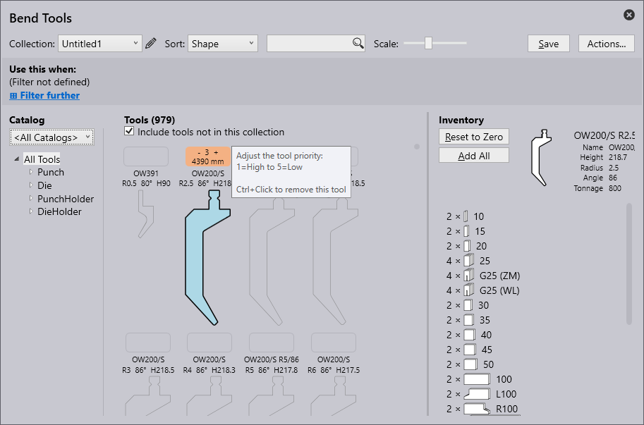
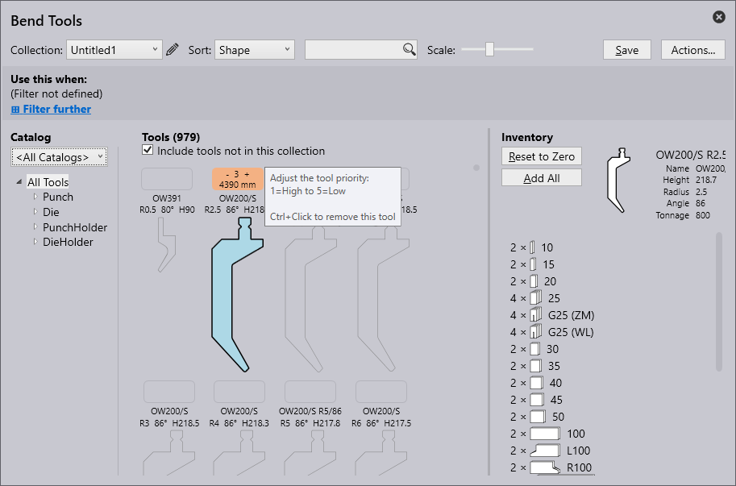

Bukningsværktøjer
De termer, der anvendes ved oprettelse af bukningsværktøj, er beskrevet nedenfor:
| S.nr. | Term | Betydning |
|---|---|---|
1 |
Værktøjslister |
De værktøjslister, der skal arbejdes med, kan vælges her. Nye værktøjslister kan oprettes med optionen Ny. |
2 |
Sortér |
Værktøjerne kan sorteres efter specifikke kriterier her (højde, navn, form, radius, vinkel, matricebredde, prioritet, værktøjsstyring). |
3 |
Søgning |
Værktøjer kan søges ved hjælp af søgefeltet. Her, for eksempel, kan der foretages en alfabetisk søgning på værktøjsnavne. Derudover kan der foretages mere komplekse søgeforespørgsler. Denne søgeforespørgsel finder alle værktøjer med UT eller EV i navnet, som også opfylder følgende betingelser: vinkel ≤ 30, højde ≥ 140, højde ≤ 220, radius = 1. |
4 |
Skalering |
Størrelsen af visningen af værktøjer kan ændres med skyderen. |
5 |
Handlinger |
Følgende handlinger kan udføres: - A Tilføj katalog: Til at tilføje forskellige typer maskiner. - B Ny værktøjsliste: Til at oprette en ny samling af værktøjer. - C Klon værktøjsliste: Til at at klone den oprettede samling af værktøjer. - D Eksportér værktøjsliste: Den aktuelle værktøjsliste kan eksporteres som filtypen ".btools". - E Importér værktøjsliste: En værktøjsliste kan importeres som ".btools". - F Importér fra ARV: Et værktøj kan importeres fra en ARV-fil, disse værktøjer lagres derefter tilpasset i værktøjskataloget (dette vil blive oprettet, hvis det ikke var tilgængeligt på forhånd). - G Importér fra DXF: Et værktøj kan importeres fra en DXF-fil. Disse værktøjer lagres derefter tilpasset i værktøjskataloget (dette vil blive oprettet, hvis det ikke var tilgængeligt på forhånd). - H Nulstil værktøjsliste: Gendanner værktøjslisten til dens standardtilstand. - I Annullér: Lukker "Handlinger…" vinduet. |
6 |
Værktøjsstyring |
Viser en oversigt over det valgte værktøj. Følgende handlinger kan udføres: - Nulstil til nul: Den samlede beholdning af det valgte værktøj er fjernet fra den aktuelle værktøjsliste. -Tilføj et sæt: Kun et sæt af det valgte værktøj føjes til den aktuelle liste. -Tilføj længde: Til at at tilføje værktøjslængden - Tilføj alle: Den komplette beholdning af det valgte værktøj er indlæst i den aktuelle værktøjsliste. Lagerbeholdningen er defineret i værktøjslisten <Alle værktøjer>. - Gem: Til at gemme de anvendte ændringer. |
7 |
Værktøjsbeholdning |
Viser beholdningen af det valgte værktøj. Venstre museklik for at tilføje et segment. |
8 |
Værktøj uden lagerbeholdning |
Et værktøj uden lagerbeholdning er ikke inkluderet i den aktuelle værktøjsliste. Ved at klikke på det tomme felt tilføjes en standardbeholdning for værktøjet, og værktøjet indarbejdes i den aktuelle værktøjsliste. |
9 |
Prioritet |
Værktøjet vælges baseret på prioriteten givet af brugeren. 1 = Højt prioriteret værktøj 5 = Lavt prioriteret værktøj |
10 |
Værktøjets visningsområde |
I værktøjets visningsområde vises alle værktøjer fra den valgte værktøjsliste. Værktøjer uden lagerbeholdning kan også vises med feltet "Medtag værktøjer uden lagerbeholdning". |
11 |
Værktøjsfilter |
Her er værktøjerne i den aktuelle værktøjsliste struktureret svarende til deres type og form. Valg af et element i denne struktur aktiverer filtrering. |
12 |
Katalog |
Et af de mange værktøjskataloger installeret kan vælges med dette (herunder TRUMPF, brugerdefineret etc.). |
13 |
Filterbetingelse |
Filterbetingelsen for den aktuelle værktøjsliste, som automatisk bruges af autoværktøjet. Dette kan bruges til en navngivet værktøjsliste, men ikke til den specielle liste <Alle værktøjer>. Det er muligt at filtrere i henhold til forskellige aspekter, herunder maskine, materiale, plade tykkelse etc. |
Oprettelse af en værktøjsliste
-
For at oprette en ny værktøjsliste klik på knappen Handlinger og vælg Ny værktøjsliste.

-
Omdøb værktøjslisten ved at klikke på redigeringsikonet .

-
Som standard viser den nye værktøjsliste alle værktøjer, herunder Stanse, Matrice, Stanseholder og Matriceholder, men ikke tilføjet til lagerbeholdningen. Sørg for, at feltet Inkludér værktøjer, der ikke er i denne samling, er valgt.

-
For at tilføje et værktøj, klik på firkantboksen over værktøjsnavnet og tasten ctrl+enter for at fjerne et værktøj.
 

-
Optionen Brug dette, når giver brugeren mulighed for at filtrere og indstille regler for en ny liste afhængig af forskellige kriterier.
-
Klik på Gem for at tilføje denne værktøjsliste til samlingen.
Tilføjelse af regel til en værktøjsliste
Klik på optionen Filtrér yderligere for at anvende en regel fra forskellige, tilgængelige filterkriterier.
-
Maskine - Henviser til den maskine, der bruges til bukninger.
-
Materiale - Angiver den type stof, der bukkes.
-
Tykkelse - Angiver tykkelsen af det materiale, der bukkes.
-
Radius - Henviser til bukningens konveksitet.
-
Overflade - Beskriver materialets udvendige tekstur eller finish.
-
Behandling - Beskriver eventuelle for- eller efterbukningsprocesser, der anvendes på materialet, såsom varmebehandling, coating eller galvanisering.
-
Film - Henviser til et beskyttende eller funktionelt lag påført materialet.
-
Tag - Brugerdefineret etiket tildelt til at kategorisere, filtrere og organisere elementer for nemmere identifikation.
| Værktøjslisten skal have mindst ét filtreringskriterium, før den kan gemmes (ellers ville denne værktøjsliste blive brugt til hver del). |

Billedet nedenfor viser et eksempel på kriterier, der anvendes til at oprette en regel:
| Når flere værktøjslister matcher et specifikt værktøjskrav, vil værktøjslisten med den mest specifikke match blive brugt. |